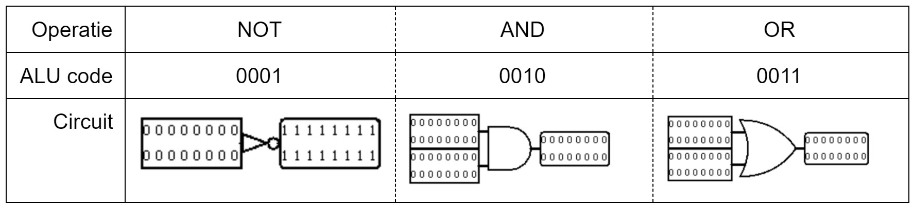

Project 3: Arithmetic Logic Unit
ALU
Project 3 draait om het maken van een eigen Arithmetic Logic Unit, afgekort ALU. We maken een 16-bit
ALU die 16 verschillende operaties uit kan voeren. De operatie wordt geselecteerd op basis van een
4-bit input en genereert een overflow indien er tijdens de geselecteerde operatie een overflow
ontstaat. We kunnen de overflow dus interpreteren als een error indicator. Voor dit circuit
gebruiken we de Wiring, Gates en Plexers standaard libraries van Logisim en onze eigen gemaakte
16-bit CLA. We bespreken eerst de ALU in het algemeen waarna we dieper ingaan op elk component.
Links staan de 2 16-bit inputs die we labelen met 'a' en 'b'. We spreken af dat als een component
slechts 1 input heeft zoals de inverse operatie, dat we de bovenste input met het label 'a'
gebruiken. Bovenaan komt de selector input binnen van onze ALU die gaat bepalen welke operatie
uitgevoerd moet worden. Via een tunnel wordt deze waarde naar de multiplexors rechts en onderaan
gestuurd. De multiplexor rechts zorgt voor de output van de juiste operatie, de multiplexor onderaan
zorgt dat de juiste overflow geselecteerd wordt.
Logic
De eerste groep componenten die we bespreken zijn de logische operaties. Dit was een makkelijke opgave aangezien de circuits bestaan uit slechts 1 standaard logische poort. We hebben alleen de input bits aangepast waarna het werkte.
Numeric Calculations
De tweede groep is die van de numerieke berekeningen, zijnde het optellen en aftrekken. Het optellen was niet moeilijk aangezien we de 16-bit adder konden gebruiken van project 2. Het aftrekken was iets lastiger. Aangezien a - b gelijk is aan a + (-b), berekenen we eerst de inverse van b. De som van a en de inverse van b geeft het resultaat van de aftrekking. Een overflow wordt genereert wanneer ofwel de inverse ofwel de adder een overflow geeft.
Comparisons
De derde groep is die van de vergelijkingen. De output van deze operaties zijn dus 0 of 1. We zijn begonnen met een groter dan circuit. Hiervoor vergeleken we alle mogelijke cases in een truth table. 0 komt overeen met een positief getal of false en 1 met een negatief getal of true.
We implementeren deze logica met behulp van een multiplexer. Het enige waar we dan nog rekening mee moeten houden zijn de gevallen waarbij a gelijk is aan b. We voegen dus toe dat als a gelijk is aan b, we 0 teruggeven en anders het resultaat van de vorige multiplexer. De bit extender zorgt ervoor dat de 1 bit output een 16 bit output wordt die de multiplexer in de ALU kan lezen. Voor het circuit van kleiner dan wisselen we de inputs a en b om in de GT component. Als a namelijk niet gelijk aan of groter is dan b, dan is het kleiner dan b.
Twee inputs zijn hetzelfde als elke i-de bit van a gelijk is aan de i-de bit van b. We kunnen dit gedrag nabootsen met een NXOR gate. Daarna kijken we of de NXOR operatie voor elke bit 1 wordt en extenden we de 1 bit naar een 16 bit output. De not equals operatie was daarna niet moeilijk meer, de not operatie op de eerste bit van de output van de equals operatie geeft true als a en b niet gelijk zijn en 0 als ze wel gelijk zijn.
Shifting
Er zijn twee manieren om bits te shiften. De eerste manier is de bits op logische wijze te shiften. Bij de SLL voegen we een 0 toe voor de eerste bit en nemen we de eerste tot de 16de bit van de nieuwe 17 bit waarde. Bij de SRL voegen we een 0 toe op het einde en nemen we de 2de tot 17de bit.
De andere manier is de shift arithmetic. Hierbij delen en vermenigvuldigen we met 2. We doen hetzelfde als bij de shift logical en moeten hiervoor niet veel veranderen, buiten een overflow toe te voegen aan de SLA als ofwel de laatste ofwel de voorlaatste bit true is. Bij de SRA doen we ook hetzelfde, maar voegen we de waarde van de 16de bit toe in plaats van 0.
Other
De laatste categorie omvat de invert, no-operation en zero operation. Deze waren alle drie tamelijk makkelijk. De zero geeft een constante 0x0 als output en de no-operation geeft de input gelijk terug. De inverse is het complement van a plus 1.
Al deze componenten vormen samen dus een ALU, hetgeen we hoorden te maken voor dit project.